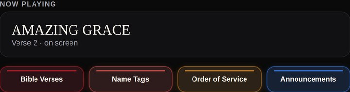
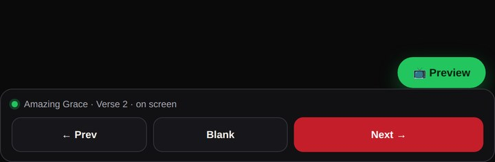
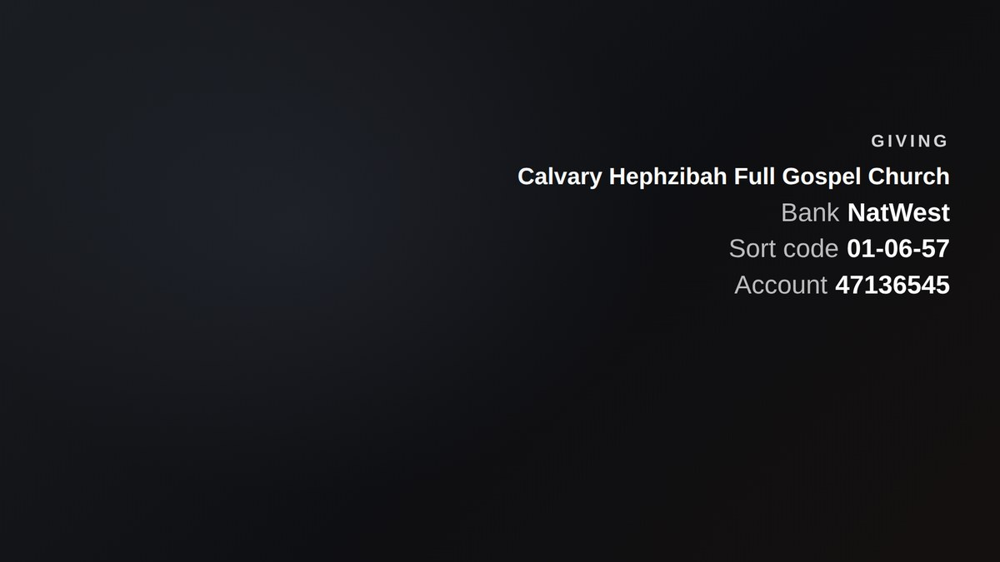
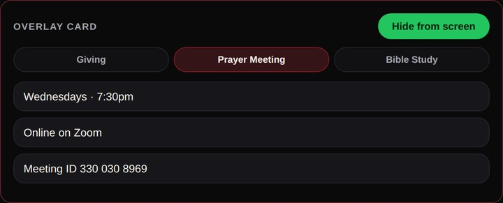
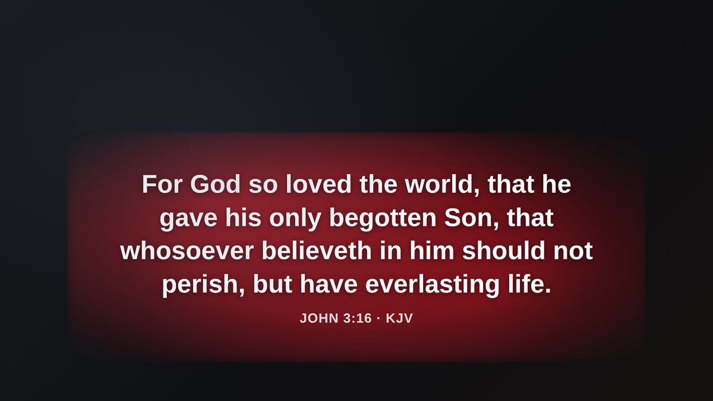

The custom-built system our media team uses to run everything the congregation sees — on the screens and on the livestream.
The Control Room is the desk our media volunteers use in every service to control what appears on screen and on the stream. From one place, live as the service flows, they can put up:
Professional software that does all of this exists — but it carries significant, ongoing licence costs, and it is built for churches in general rather than for us. So we built our own: made and maintained in-house, and shaped entirely around the way Calvary actually runs its services. It does what the paid tools do, fits how we work, and keeps improving — without the extra spend.
A big tidy-up of the operator desk, plus a clearer look on screen. Nothing you knew has moved far — most things are now quicker to reach.




